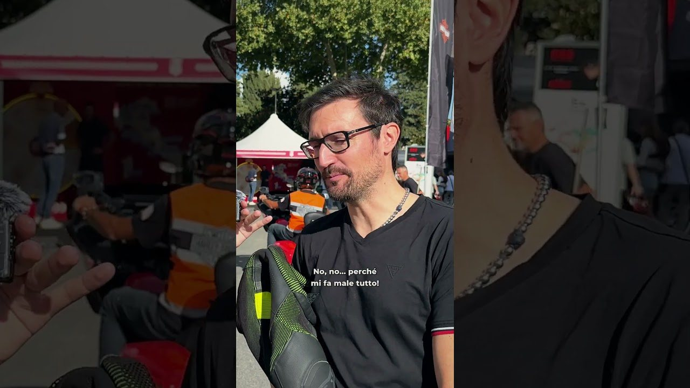
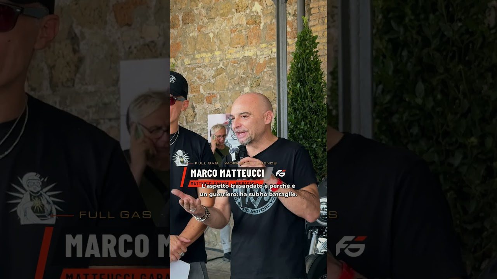
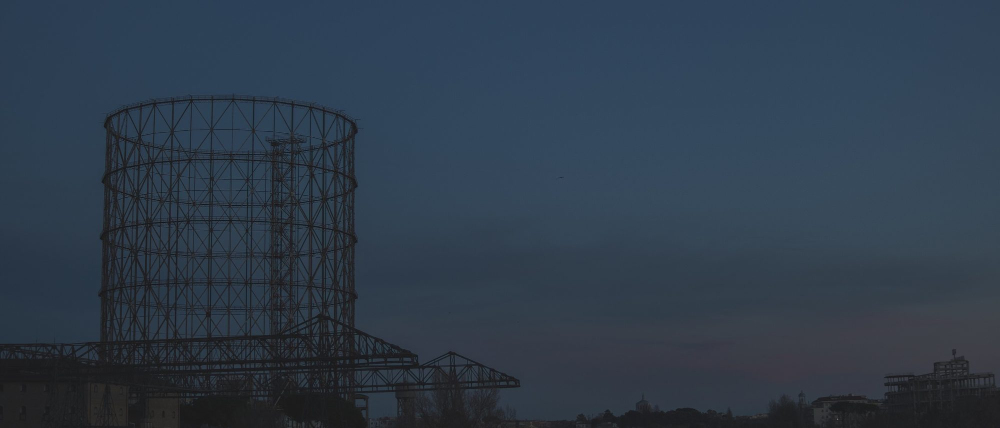

Il Diario · la redazione scrive
Quello che
non entra nel video.
Dietro le quinte degli speciali, i numeri de Il Dettaglio con le fonti, le special viste da vicino, il mese in date, come vederci. Scritto dalla redazione, con le stesse regole dei video: da vicino, con i dati, dichiarando quello che va dichiarato.
 La linea
La lineaPerché ci stiamo vicini
Un canale motori si può fare in due modi. Questo è il nostro, spiegato con le regole che usiamo davvero: la luce che c'è, la grana che resta, il testo che entra solo quando porta un dato.
 Dietro le quinte
Dietro le quinteDietro le quinte: come abbiamo girato lo speciale al Gazometro
Tre giorni, due conduttori, sei capitoli e una sola domanda per tutti. Cosa c'è dietro i trentaquattro minuti che vanno in premiere stasera alle 21:00, e perché il quarto capitolo è diverso dagli altri.

Il GarageQual è la tua moto preferita?
La domanda che Claudia ha fatto a tutto il Gazometro è la domanda del mese. Si risponde nei commenti su YouTube, oppure dal Garage: scegli la tua, il testo si copia da solo e ti porta al video.

SpecialMurasaki, la moto samurai
«L'aspetto trasandato è perché è un guerriero: ha subìto battaglie.» Marco Matteucci presenta la special di Matteucci Garage al Workshop Legends, e in una frase spiega cos'è una special.
 Officina
OfficinaCos'è una bagger da corsa
Una Harley-Davidson da turismo, con le borse, portata in pista. Sembra una contraddizione ed è diventata una categoria. Al Gazometro il Killer Bagger Contest ne ha messe in fila tre, con preparazioni fino a ottantamila euro.
 Servizio
ServizioCome vedere Full Gas: 403, tasto rosso, YouTube
Tre modi, tutti gratis. Il canale 403 del digitale terrestre con il tasto rosso, il canale YouTube dove escono speciali e pillole, e questo sito, dove ogni video si guarda nello stesso player del canale.

Il meseSettembre in sette date
Il mese in cui Full Gas è uscito con il primo speciale è stato anche un mese pieno: un italiano vince a Monza dopo sessant'anni, Márquez riprende la testa a Misano, Torino apre il salone in piazza, il Gazometro si riempie di moto. Il calendario, con i fatti.
 Il Dettaglio
Il DettaglioBugatti Tourbillon: il paradosso dell'elettrico
Un V16 aspirato da 8,3 litri che gira a 9.000 giri, tre motori elettrici, 1.800 cavalli e un cruscotto a ingranaggi disegnato da un orologiaio. L'elettrico dà la risposta immediata, il motore conserva il carattere meccanico. Il primo Dettaglio di Full Gas.
La benzina del lunedì
Una mail a settimana. Niente altro.
Cosa esce, cosa abbiamo girato, dove andiamo. Il lunedì mattina, cinque righe, un link. Ci si iscrive dal Garage.